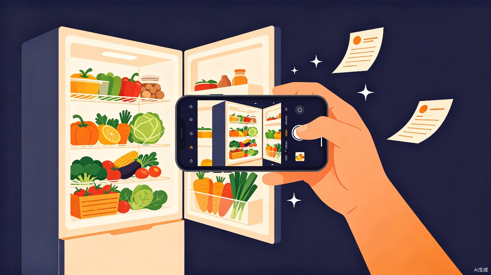
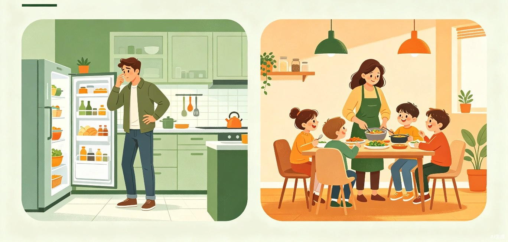
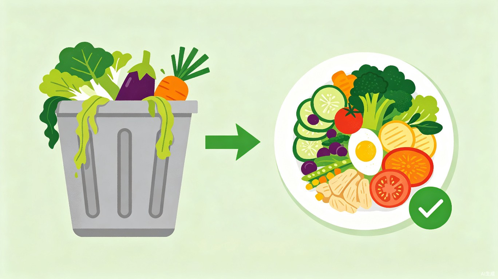

打开冰箱，拍一张照片，AI 即刻告诉你「就用手边这些食材，能做什么」。 让每一份食材都被珍视，让每一次烹饪都充满灵感。

每一个做饭的人，都经历过这样的困扰
面对冰箱里一堆「孤品」食材——半颗洋葱、一根胡萝卜、两块鸡胸肉，完全不知道能做什么
上网搜菜谱，发现大部分都需要额外购买食材，还得再跑一趟超市，费时费力
最终只能眼睁睁看着食材过期变质，中国家庭每年人均浪费约50公斤食物
一个微信小程序，三步解决你的「今天吃什么」难题
打开冰箱拍照
AI自动识别食材
AI分析食材组合
生成可行菜谱
查看详细步骤
缺料一键下单
基于计算机视觉技术，精准识别冰箱中的蔬菜、肉类、调味品等各类食材
AI 根据现有食材自动生成 3-5 道可做菜谱，标注「完全匹配」和「需补充」
学习用户口味偏好、饮食禁忌，越用越懂你的「AI私厨」
社区互动、成就系统，让减少食物浪费变成一件轻松有趣的事
精准定位核心用户群体，覆盖高频烹饪场景

工作日自己做饭、周末集中采购食材。有一定烹饪基础但创意有限，经常面对零散食材无从下手。
负责全家日常饮食安排，关注食材浪费问题。需要快速、健康、不重复的家常菜谱。
打开冰箱面对零散食材，不知道吃什么的时候
想先「清空」冰箱剩余食材，再规划新采购
临时有客来访，用现有食材快速凑一桌菜
不止是一个工具，更是一个有意义的生态闭环

「今天吃什么」是日均触达数亿人的高频场景，产品可形成「识别→推荐→采购→烹饪」完整商业闭环。
推荐缺失食材一键下单，直接导流至生鲜平台
与烤箱、炒菜机等智能设备联动，一键启动烹饪程序
食材品牌精准投放，在推荐场景中自然触达目标用户
AI 多模态能力驱动的智能烹饪助手
食材图像识别与分类，精准识别数百种常见食材
菜谱生成与烹饪步骤推理，理解食材组合逻辑
个性化推荐引擎，学习用户偏好持续优化
微信原生体验，零门槛使用，社交裂变传播
冰箱剩菜料理大师 —— 不是给你一万个菜谱，而是告诉你「就用手边这些，能做什么」。
让减少浪费变得轻松有趣
全球每年约13亿吨粮食被浪费，家庭厨房是主要环节之一。我们让「光盘」变成游戏，让环保成为习惯。
用尽每一份食材
通过AI推荐最大化利用现有食材，从源头减少浪费
光盘挑战游戏化
社区成就系统，让珍惜粮食成为可分享、可炫耀的趣事
环保意识传播
在用户社区中形成「珍惜粮食」的良性氛围和文化认同